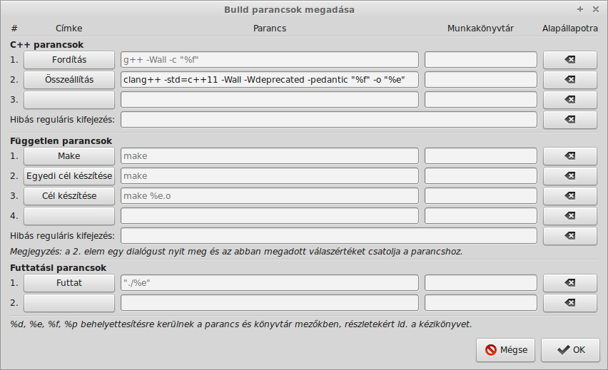

Fejlesztőkörnyezetek
Czirkos Zoltán · 2019.03.19.
Az ajánlott, ingyenesen letölthető fejlesztőkörnyezetek listája.
A tárgy főként a C11 és a C++11 nyelvek újdonságairól, nyelvi elemeiről szól, ezért elengedhetetlen hozzá egy kellően új C11/C++11 fordító.
A C++ szabvány 2011-es verziójához némely fordítónál külön parancssori paraméter kell az engedélyezére. Emellett a tanuláshoz érdemes bekapcsolni a fordítók figyelmeztetéseit is.
Javasolt eszközök
- Clang fordítóprogram, legalább 3.3-as verzió. VAGY: GCC/G++ fordítóprogram, legalább 4.8-as verzió.
- GNU Make.
- GDB, parancssoros nyomkövető.
- Geany, minimál IDE.
Friss GCC/G++ telepítése újabb Ubuntu / LinuxMint rendszeren
Általában csomagban elérhető. Az egyes, egymás mellé telepíthető nagy verziókat
a csomag nevében is megkülönböztetik, pl. g++-7.
Friss GCC/G++ telepítése régebbi Ubuntu / LinuxMint rendszeren
- Honlap: https://launchpad.net/~ubuntu-toolchain-r/+archive/ubuntu/test
- PPA beállítása:
sudo add-apt-repository ppa:ubuntu-toolchain-r/test sudo apt-get update
- Ebben 6.2-es és 7-es (experimental) verzió is elérhető.
Friss GCC/G++ telepítése OpenSuse rendszeren
- Leap (42) verzión csomagból elérhető,
gcc6-c++néven fut.
A Geany beállítása
- Hozz létre egy
valami.cppnevű fájlt. - Menüben: Összeállítás/Build parancsok megadása (Build/Set build commands)
menüpont alatt, fentről a második pontot kell átírni az alábbiak szerint.
A fordító verziójától függően értelemszerűen c++14 vagy c++17 is lehet.
g++ -std=c++11 -Wall -Wdeprecated -pedantic "%f" -o "%e"
Ezután F9-re automatikusan C++11 módban fogja használni a fordítót.
Linuxon használható a lentebb említett CodeBlocks program is.
Javasolt eszköz
- CodeBlocks 16.01 ingyenes fejlesztőkörnyezet, integrált G++ 4.9.2 fordítóval.
- Letölthető: http://www.codeblocks.org/downloads/26.
- A letöltések közül a harmadikat, a legalsót kell választani! A fájl neve:
codeblocks-16.01mingw-setup.exe. A nem mingw-s változatokban nincs fordító!
A CodeBlocks beállítása
- Settings/Compiler menüpont.
- Global compiler settings, fent GNU GCC Compiler.
Have g++ follow the C++11 ISO C++ language standardopció.- És persze:
Enable all common compiler warningsopció.